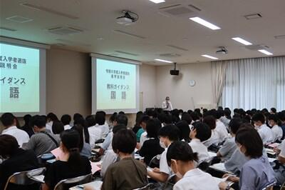
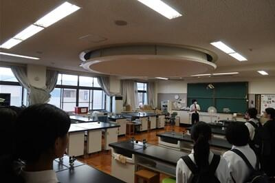
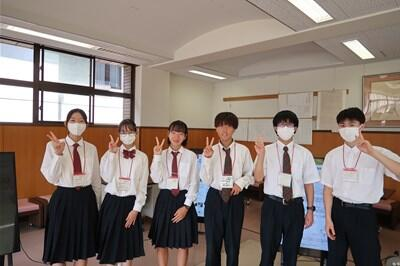
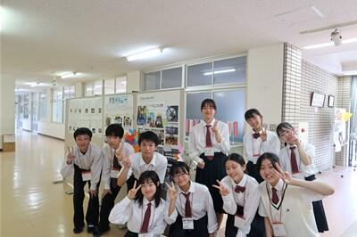
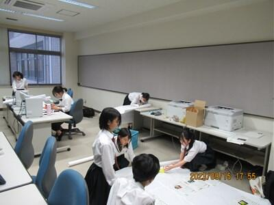
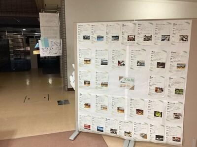

SAGANO BLOG
- >
- SAGANO BLOG
- >
- 中学生向け
2024年02月05日
京・平安文化論ラボとジュヴァンセル様とのコラボ企画であるチョコレートが、旧三井家下鴨別邸様の喫茶で、提供されることになりました。
会場：旧三井家下鴨別邸 京都市左京区下鴨宮河町５８番地２ 075-366-4321
京阪電車「出町柳」駅 徒歩５分
期間：令和６年２月１０日（土）～２月２９日（木）※水曜日は休館日です
開館時間：９：００～１７：００（喫茶営業ラストオーダー １６：００）
旧三井家下鴨別邸様は、「文化と観光の融合による文化財の保存と活用の好循環の実現」を運営目的に掲げておられ、施設を一般公開されている他、伝統文化等を身近に体感できるイベントを開催しておられます。
この度、『源氏物語』をテーマにして商品化されたチョコレート３種（「萩の上露」・「絶えぬ思ひ」・「淡月」）を、旧三井家下鴨別邸様の喫茶メニューとして、期間限定で提供されることが決定しました。
私たちの洋菓子のデザイン画も展示されます。
旧三井家下鴨別邸様は、『源氏物語』にも登場する糺の森の中にあります。
この機会に旧三井家下鴨別邸様で、『源氏物語』の世界にひたってみてください。
2024年02月01日
授業も残すところわずかとなってきました。
最後まで研究を頑張っています。
実験器具がたくさん。何の実験をしているのでしょう。
植物に含まれる「ポリフェノール」の量を調べているみたい。難しそう。
植物は、貝割れ大根を発芽させて、それを使っているみたいです。大変そうだけど、楽しそうで良いですね。
こちらは、また違った実験の様子。
見慣れないものがたくさん。これは、「クリーンベンチ」といって、無菌状態で作業するための機器。作業が複雑で難しそうですね。「アクネ菌」を「乳酸菌」で抗菌できるか確かめているそう。自分の悩みから研究を始めたそうですよ。
そして、こちらは、それを培養している様子。結果が出るまでに、１，２日はかかるそう。この中に生物が居るなんて・・。
翌日観察に来ていましたよ。

こちらは、何をしているのでしょう。
「魚」のストレスを調べているそうです。魚にもストレスがあると思って調べたいと思う気持ち、素敵ですね。
縞模様が特徴的なゼブラフィッシュとその飼育水槽
生物ラボでは、授業外の活動が多くなるため生物室で作業した際には、こうやって履歴を自分たちでつけています。
皆さん、研究とお世話の両方、頑張っているんですね！
こちらは、少し狭い部屋ですが、皆さんそれぞれ作業していますね。
次回へ続く。
2024年01月26日
１月２４日（水）に、古典の日文化基金未来賞を受賞したことを報告するため、京都府教育委員会を訪問しました。
京都府教育委員会の前川教育長から、お祝いの言葉をいただきました。
そして、ラボでの取り組みについては、「できたことや良かったことだけでなく、これからの課題についても、きちんと分析できていることが良いですね。これからも頑張ってください。おめでとうございます。」と温かい励ましの言葉をいただきました。
また、京洋菓子司ジュヴァンセル様とのコラボ企画で、２月１日から一般販売される洋菓子について、「洋菓子から源氏物語の世界を知るというのは、面白い取り組みです。」とお褒めの言葉をいただきました。
アカデミックラボという探究活動の授業で自分たちが考えたことが一つ一つ形になっていくこと、そして古典の魅力を多くの方に伝えて楽しんでいただけることに、生徒たちはやりがいや充実感を感じています。
さらに、昨年９月に古典の日文化基金未来賞をいただいたことは、この上ない喜びです。
表敬訪問でいただいた言葉を励みに、これからも古典の魅力を発信していけるよう取り組んでいきます。
なお、洋菓子の一般販売は、２月１日（木）から、京洋菓子司ジュヴァンセル様の御池店とオンラインショップで販売されます。（ジュヴァンセル御池店 京都市中京区御池通高倉西入高宮町216 Tel.075-231-7571）
2024年01月25日

１月１６日（火）に金剛能楽堂で、本校２年生を対象に古典芸能鑑賞を行いました。
まず、狂言『附子（ぶす）』です。
主人は、桶に「附子」という猛毒が入っているので、近づかないようにと言って出かけます。
「附子」の方から吹く風にあたっても、命が危うくなると言います。
太郎冠者と次郎冠者は、それが美味しい砂糖と知って......。
茂山千五郎先生（太郎冠者）と茂山逸平先生（次郎冠者）によって、「附子」を危険物としておびえる様子や、その後に美味しそうに食べる様子が演じられ、生徒達は楽しそうに笑って鑑賞していました。
次に、能『葵上』を鑑賞しました。
シテは金剛龍謹先生でした。
こちらは『源氏物語』が題材になっています。
六条御息所の生き霊が、葵上を苦しめようとする場面は、迫力満点でした。
時代を経ても、嫉妬や恨む気持ちがあるということを感じさせられました。
事前学習では、「躍動する時代ー中・近世ーの文芸」ラボと狂言部が、この日を楽しめるようにと解説動画を作成してくれました。
その事前学習があったので、より楽しんで観ることができました。
一流の先生方による能と狂言を鑑賞し、京都の伝統文化に親しむことができました。
2024年01月22日

シンギュラリティバトルクエスト2023 サイバークエストの決勝戦が１月20日・21日に開催されました。嵯峨野高校コンピュータ部の1年生が、合計9時間にわたる戦いの結果、見事１位を獲得しました。
シンギュラリティバトルクエストとはAI/ICTのスキルを競う大会で、AIクエスト、サイバークエスト、データクエスト、ロボクエスト、Xクエストの５つの競技があります。サイバークエストは、情報セキュリティに関するクイズ形式の問題を、セキュリティの知識やソフトを駆使して、隠された言葉(Flag)を見つけるCTF形式の競技です。
サイバークエスト決勝戦は、各ブロック代表６チーム、選抜枠11チーム、リベンジャーズ３チームの合計20チームが競い合いました。RSA暗号や量子暗号に関する難問も出題される大変難易度の高い大会でした。応援ありがとうございました！
2023年12月20日


華道部は、全国高校生伝統文化フェスティバルの「迎え花」の製作を行いました。
このフェスティバルは、日本の伝統文化に勤しむ全国の高校生が一堂に会する文化フェスティバルです。
全国からの高校生や観客の皆さんをお出迎えするために、お花で会場を飾りました。
部員みんなで一つの作品を作るのは初めてのことでしたが、納得できる作品ができました。
嵯峨野高校は、玄関を入った正面が担当場所でした。
作品テーマは、「Noël」。
作品の説明です。
「ようこそ、京都へ。皆さんをお迎えするにあたり、今日という『ハレの日』にふさわしい華やかな作品としました。『Noël』というテーマで、クリスマスをイメージしています。皆さんのものにサンタが訪れるようなイメージで制作しました。」
このブログをご覧の皆さんのところにも、サンタが訪れますように。
メリークリスマス！
2023年12月19日

CyberSakura予選ラウンドの結果が確定し、嵯峨野高校コンピュータ部から参加したチーム「HEXAGON」は予選ラウンド1位となり、決勝ラウンド出場権を獲得しました。
CyberSakuraは2021年に始まったサイバーセキュリティ分野の人材育成を目的とした教育プログラムです。日本国内の中学生・高校生・高専生（1〜3年）を対象に実際のサイバー攻撃を想定し、仮想のコンピューター上で脆弱な設定や状況を改善することで獲得できるスコアをチーム対抗で競います。
決勝ラウンドは、2024年３月24日に福井県鯖江市で開催され、予選ラウンド上位5チームが競技に参加します。
2023年11月24日
来校される中学生のために、広報委員の企画係が中心となり、毎回様々な企画を実施しています。


今回の企画は、「部活動ユニホームの展示」・「食堂メニュー人気ランキングのチラシ作成」・「学校生活動画の作成」で、1ヶ月前から準備を始め、実現することができました。


今回で本年度の広報委員会の活動は終了です。
7月からすべての学校説明会の運営に協力し、回を重ねるにつれて、積極的に行動することができました。


次回は、12月9日（土）に個別相談会を開催予定です。
2023年11月24日
１１月１８日（土）に「中学2年生対象説明会」を本校にて開催しました。
当日は、木枯らしが吹く寒い日でしたが1200名を超える中学生とその保護者の方々に参加していただき、誠にありがとうございました。
全体会では、本校の教育内容の説明や生徒による学校生活についてのプレゼンテーションを行い、その後、施設見学や個別相談等を実施しました。

全体会の様子と広報委員

2023年11月22日
シンギュラリティバトルクエスト2023 二次予選の結果が11月14日に発表され、嵯峨野高校コンピュータ部から参加したチーム「HEXAGON」はサイバークエスト関西ブロック代表に選ばれました。
シンギュラリティバトルクエストとはAI/ICTのスキルを競う大会で、AIクエスト、サイバークエスト、データクエスト、ロボクエスト、Xクエストの５つの競技があります。HEXAGONが参加したサイバークエストは、情報セキュリティに関するクイズ形式の問題を、セキュリティの知識やソフトを駆使して、隠された言葉(Flag)を見つけるCTF形式の競技です。
2024年１月20･21日に開催される決勝大会では、各ブロック代表６チーム、選抜枠11チーム、リベンジャーズ３チームの合計20チームが競い合います。決勝でも入賞できるよう頑張ります！
2023年11月10日


京・平安文化論ラボです。
古典離れを課題とし、その課題解決のための探究活動をしています。
その取組やスタンプラリーの様子を、ＮＨＫ京都様に取り上げていただきました。
当日は、生放送での出演となり、とても緊張しましたが、良い経験となりました。
今後は京洋菓子司ジュヴァンセル様とのコラボ企画により、生徒一人につき登場人物一人をデザインした洋菓子の販売を予定しています。
〔ＮＨＫプラスでは、１週間は見逃した番組を見ることができます。（登録必要）〕
商品のご紹介 ※「」は商品名です
１チョコレートの詰め合わせ･･････「萩の上露」～光源氏・紫の上・桐壺更衣～
２チョコレートの詰め合わせ･･････「恋路」～玉鬘・六条御息所・夕顔～
３チョコレートの詰め合わせ･･････「淡月」～光源氏・明石の君・朧月夜～
４チョコレートの詰め合わせ･･････「絶えぬ思ひ」～光源氏・女三宮・柏木～
５チョコレートの詰め合わせ･･････「すゑつむ花」～内面と外面～
６タルト････････････････････････「光源氏」
７クッキー･･････････････････････「薫る大将」
８パウンドケーキ････････････････「花散里」
９ケーキ････････････････････････「藤壺」
１０ケーキ･･････････････････････「葵の上」
以上、１０種類です。
なお、一般販売は、２月から、京洋菓子司ジュヴァンセル様の御池店とオンラインショップで販売されます。
（御池店 京都市中京区御池通高倉西入高宮町216 TEL 075-231-7571）
２月からということで、少し先ですが、どうぞお楽しみに！
2023年11月10日

京・平安文化論ラボです。
「ちゅう源氏と巡る 源氏物語 京都スタンプラリー」にご参加いただきまして、ありがとうございました。
１０月２８日（土）、２９日（日）、１１月３日（金祝）、４日（土）、５日（日）の５日間、天気に恵まれ、快晴でした。
２８０００枚の台紙を用意しましたが、その多くを手に取っていただくことができ、約２０００人の方が、景品交換していただきました。
その中で、生徒は参加者の方と交流することができました。
「『源氏物語』に関係する寺院のことが良くわかって楽しめました。」
「来年の大河ドラマの下調べとして、ためになった。」
「これのおかげで、知らなかった神社やお寺に行くことができました。」
「外国のお客さまにもすぐに対応しているのがすごいです。」
など、多くの温かい言葉や励ましをいただき、喜んでいます。
秋の京都をお楽しみいただき、古典の世界を身近に感じていただけたら幸いです。
2023年10月21日
さあ、いよいよ後輩となる中学生をご案内です。
受付から司会進行まで、頑張っています！
さて、お分かりでしょうか？
つまり、嵯峨野の見どころは生徒の優しさなのです。
校舎見学をしていると、廊下の行き止まりのパーテーションが...嵯峨野っぽい！
中学生のみなさん、この壁を越えて来てくださいね！！
2023年10月21日
今日は後輩たちのために進学説明会の準備中。
学食のメニュー紹介や在校生による進路相談など生徒企画も賑やかです。
何やら熱心に見ている生徒の姿が...
なんと受験で使った自分たちのノートを展示しています。生徒いわく「自分たちがやって欲しかったことをしてあげたい」とのこと。
...そして1番に食いついたのは校長先生でした。
ノートの表紙書に書かれた受験生へのメッセージに感動されています。
生徒企画おそるべし、ある意味すでに成功です。
もちろん中学生からも大好評！
→嵯峨野の見どころ②【進学説明会】へつづく
2023年10月04日

アカデミックラボ「京・平安文化論」です。
「ちゅう源氏と巡る 源氏物語 京都スタンプラリー」を実施します！
この取組は、『源氏物語』の世界を、身近に感じていただくことを目的にしています。
京都には、『源氏物語』ゆかりの神社仏閣がたくさんあります。
スタンプラリーにご参加いただき、秋の京都をお楽しみください！
〈日程〉
１０月２８日（土）、２９日（日）
１１月３日（金祝）、４日（土）、５日（日）の５日間です。
〈場所〉
スタンプ設置場所は、京都市内の『源氏物語』ゆかりの神社仏閣１１ヵ所と特設会場です。
①下鴨神社 ②上賀茂神社 ③雲林院 ④仁和寺 ⑤清凉寺 ⑥野宮神社
⑦天龍寺 ⑧廬山寺 ⑨清水寺 ⑩渉成園 ⑪東寺
〔特設会場〕古典の日フォーラム２０２３（事前に応募登録された方のみ）
〈台紙の配布〉
・本校事務室
・京都市バス・京都バスの車内
・神社仏閣１１ヵ所（古典の日フォーラムを除きます）
〈景品〉
スタンプを３つ集めると、「ちゅう源氏」オリジナルコットンバックをプレゼントします！
最新情報は、Ｘ（旧twitter）やInstagramでお知らせします。
X ＠kyo_heian_labo
Instagram kyo_heian_labo です。
どうぞ、ご参加ください！お待ちしています！
2023年10月02日
９月1６・１７日に本校にて進学説明会を開催しました。
当日は残暑が厳しい中、たくさんの中学生とその保護者の方々に来校していただきました。誠にありがとうございました。
全体会では校長先生からのあいさつ、在校生によるラボや学校生活についてのプレゼンテーション、学科長からの教育内容説明、選抜についての教科ガイダンスを行いました。その後、施設見学と個別相談等も行いました。
全体会の様子

全体会後の様子

説明会前日の放課後、広報委員の企画係が集まり、展示等の準備を行いました。
来校される中学生のために、様々な企画を広報委員会で提案し、実現することができました。今回は、約３０ある部活動の紹介チラシを作成し、掲示しました。そして、学校の魅力や受検のアドバイス、在校生の平日スケージュールを掲載したチラシを作成し、配布しました。

次回は10月21日に開催予定です。
2023年09月27日
9月22日（金）に体育祭を実施しました。本来であれば前日21日に実施予定でしたが、悪天候が予想されるため1日順延して行いました。
今年度は4年ぶりに制限のない開催となり、生徒も教職員も楽しみにしていました。生徒の願いが天に届いたのか、当日は、清々しい気候で絶好の体育祭日和でした。
今年度はグランドに全学年、教職員が一堂に集まっての開催。ローハイドや棒取り、綱引きといった種目や、各クラスの学級旗も復活し、競技はもちろん、応援にも力が入ります。声がかれるほどに熱心にクラスの仲間や同じ団の選手を応援し、歓声があがる光景や、はじけるような笑顔で楽しむ生徒の姿には、感慨深いものがありました。
この日のために春から準備を進めてくれていた体育委員の皆さん、準備・後片付けや各種目の補助をしてくれたクラブ員・保健美化委員の皆さん、放送や実況で体育祭を盛り上げてくれた放送部の皆さんのおかげで大盛り上がりを見せた体育祭でした。ありがとうございました。
2023年09月21日

A sunny Saturday morning set the scene for the 22nd annual Cosmos Cup for Junior High students. Held at Sagano High School early on September 9th, this contest saw eight finalists representing various different Kyoto Junior High Schools come to show their English skills.
9月9日(土)、第22回こすもす杯中学生英語朗読コンテストを開催しました。予選を勝ち抜いた中学生8名が参加し、日頃の英語学習の成果を披露してくれました。
Cosmos Cup is an English story-telling contest. Students are given a story they have never seen before, and, with only twenty minutes of preparation, are asked to read it out loud in four minutes or less. The students' accuracy and pronunciation are not the only things taken into account! As well as English mechanics, the judges also look for the rhythm of the speech and the passion and emotion put into the words. Not only does English fluency matter, the ability to appropriately perform in English is equally important.
こすもす杯は英語朗読コンテストです。参加者は当日渡された課題文を見て、20分間の練習の後、4分間で朗読します。発音や正確性だけでなく、本文の内容を理解したうえでの抑揚や感情表現なども重要な審査項目です。流暢さに加えて、場面・文脈に応じたパフォーマンスが求められます。
Members of the Sagano High School English Speaking Society also assisted. Four students volunteered their time to share their love of learning English with the Junior High students and help the judges and teachers in running the contest. Duties of these students included reading each contestant's introduction, helping guide contestants between their different rooms, and chatting with the contestants to calm their nerves. With the assistance of these Sagano students, the contest ran smoothly.
また、本校ESS部の生徒達が運営に協力してくれました。4人の部員が、司会進行・参加者誘導だけでなく、参加者の気持ちをほぐす役割も担うなど、様々な場面で活躍し、交流を通じて英語学習の楽しさも伝えてくれました。部員たちのサポートのおかげでスムーズな大会運営ができました。
Judges were members of the Sagano English staff, as well as Vice Principal Shibata Mika. Every student did a fantastic job, and the judges were all very impressed at the English abilities of the students. When it was all over, however, there were only four contestants who left with a prize.
審査員は、本校英語科教員及び柴田副校長が務めました。どの参加者の発表も素晴らしく、審査員一同みなさんの実力に感銘を受けました。審査結果は以下の通りです。
Best Performance Prize: Miss Sakurai, Saikyo High School Affiliated Junior High
Outstanding Performance Prize: Miss Takahashi, Shijo Junior High
Good Performance Prize: Miss Takeuchi, Shijo Junior High
Honorable Mention: Miss Misaki, Seika Nishi Junior High
最優秀賞：櫻井さん【京都市立西京高等学校附属中学校】
（京都府教育委員会教育長賞）
優秀賞： 高橋さん【京都市立四条中学校】
（学校長賞）
奨励賞： 竹内さん【京都市立四条中学校】
努力賞： 三崎さん【精華町立精華西中学校】
Congratulations to our winners, and congratulations to all our contestants!
受賞者の皆さんおめでとうございます！
あらためて決勝参加者8名全員の健闘に敬意を表したいと思います。
みなさん、ありがとうございました！
2023年09月14日


9月13日に仁和寺で開催された建築学生ワークショップ2023大学生✕高校生交流会に本校の文化・デザインラボで建築をテーマに探究する2グループが参加しました。
この取組は、全国の建築やデザイン、芸術を学ぶ大学生・大学院生を対象に公募し多数の応募者から選出された学生たちが、地域滞在型のワークショップで作品を制作するもので、毎年全国の世界遺産や寺社仏閣で開催されています。
今年度は京都仁和寺で開催され、参加されている大学生の皆さんは9月17日の公開プレゼンテーションを目指し、作品を制作されていました。
真夏日が続く中、参加大学生が屋外で仲間と1つの作品を作り上げるためにお互いに意見を交わし合い、イキイキと活動する姿や、自分たちの作品を自信をもってプレゼンする様子を見させていただきました。
また、交流会ということで、高校生にも積極的な意見の発言を求められ、本校生徒も慣れないながらも感想や意見、質問をしていました。
建築やデザインについての考え方が広がり、自分たちの探究活動に良い刺激になった日となりました。
2023年09月14日


{kind=link}
{kind=link}
{kind=link}
{kind=link}
{kind=link}
{kind=link}
{kind=link}
{kind=link}
{kind=link}
{kind=link}
{kind=link}
{kind=link}
{kind=link}
{kind=link}
{kind=link}
{kind=link}
{kind=link}
{kind=link}
{kind=link}
{kind=link}
{kind=link}
{kind=link}
{kind=link}
{kind=link}
{kind=link}
{kind=link}
{kind=link}
{kind=link}
{kind=link}
{kind=link}
{kind=link}
{kind=link}
{kind=link}
{kind=link}
{kind=link}
{kind=link}
{kind=link}
{kind=link}
{kind=link}
{kind=link}
{kind=link}
{kind=link}
{kind=link}
{kind=link}
{kind=link}
{kind=link}
{kind=link}
{kind=link}
{kind=link}
{kind=link}
{kind=link}
{kind=link}
{kind=link}
{kind=link}
{kind=link}
{kind=link}
{kind=link}
{kind=link}
{kind=link}
{kind=link}
{kind=link}
{kind=link}
{kind=link}
{kind=link}
{kind=link}
{kind=link}
{kind=link}
{kind=link}
{kind=link}
{kind=link}
{kind=link}
{kind=link}
{kind=link}
9月８日、２年生のアカデミックラボの時間に、文化・デザインラボで建築やデザインをテーマに探究する生徒を対象に、３Dプリンター講習会を実施しました。
今回、公教育の探究活動を支援するソーシャル企業として活動する、本校卒業生で一般社団法人e-donuts代表理事の方にコーディネートしていただき、株式会社Monozukuri Venturesから講師の方をお招きし、デザインについてや、プロダクトや建築といった立体構造の捉え方（プロダクトデザインスケッチ）、CADソフトウェアの使い方をレクチャーしていただきました。
生徒達は慣れないソフトの使用に最初こそ苦戦していましたが、20分ほどするとすぐに使いこなし、与えられた課題をアレンジして制作するなど夢中で取り組んでいました。
完成したデータは、本校が所有する３Dプリンターで実際に出力してみました。
この講習会で「なんとなく難しそう」と感じていた３Dプリンターが自分たちでも使用できるということを知り、今後デザインしたものを試作するにあたり３Dプリンターで試作を重ねることができる選択肢が広がったように思います。
〒616-8226
京都市右京区常盤段ノ上町15番地
TEL 075-871-0723 FAX 075-871-0724
E-mail [email protected]
Copyright (C) 京都府立嵯峨野高等学校 All Rights Reserved.